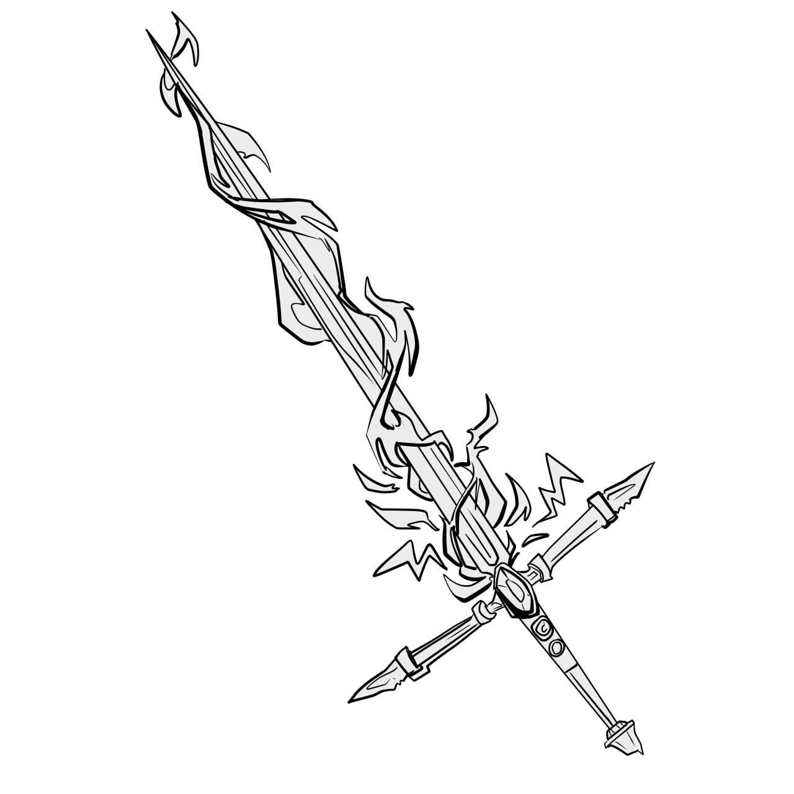
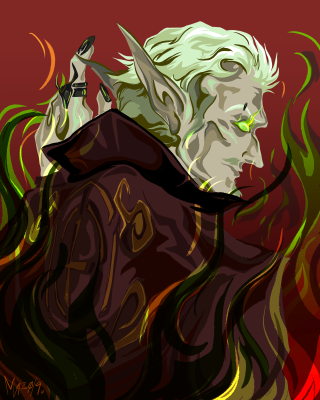
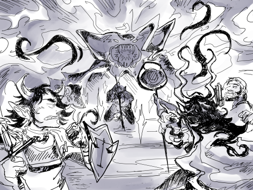

The First Hunt
As for the party: the Hunters' Guild put out the call for recruits at the end of the winter season, as usual, to bolster and swell their numbers in preparation for the larger monsters to come out of hibernation. A group of 5 answered the call and traveled to the square of Felwinter City, where they were given their first test to pass: locate Tormid, the stronghold and keep of the Guild, without dying along the way. These five were named:
- Brad Hotwing, a young and hotheaded aasimar fighter/barbarian with a chip on his shoulder and incredibly anime shades
- Sir Valter Luna, a distinguished scion of the human House of Luna and veteran of the War of the Abyss ten years prior, in search of funds to regain his family's stolen fortune and reinstate their status in the nobility of the Land of Felwinter
- Bophades Gnutz, an ancient elven wizard who has cast spells across the water and the land, and he's seen every blue-eyed floozy on the way. Clad in an absolutely horrid, disgusting wifebeater, the stains upon which he catalogues obsessively, he strides forward, the runes in his staff that serves as his spellbook glowing ominously.
- Gonta Gonta, a half-orc fellow veteran of Sir Luna. Born in the Shadowfell, his only recollections of his early life are of bloodshed, fear, and horrific monsters. He fell through a rift between worlds onto the Prime Material Plane and launched into a career as a maritime marauder, before enlisting to defend the world against the influx of demons and devils that beset Felwinter during the War of the Abyss.
- Endeavor, a tiefling paladin of the God of Justice, Tyr, who strides out as a brand of the holy, searing light of vengeance and justice to support the weak and lay low the wicked.
Though they came perilously close to demise, beset by monsters changed and twisted by rifts in reality and challenged by a winding path with twists and turns, they ultimately succeeded and found Tormid, a great keep of stone and iron nestled deep within Felwinter Forest. They met the Huntmistress of the Guild, Madera, and her wife, the Oracle Marcia. Marcia is the political figurehead and serves on the Felwinter Council; Madera serves as the trainer and most fearsome huntress in the land. The part was assigned their first contract - hunt and kill a Stormjaw, a fearsome reptilian creature with the power and fury of lightning, and bring back several of its parts as trophies.

The five adventurers tracked down the beast to its lair, followed it inside, and through a pitched battle which brought several party members close to being devoured in the jaws of the mighty beast or fried by its lightning shield, felled the mighty beast with a lance through the brain, the final blow struck by the party's noble knight Valter. Using the magic knife given to them by the Guild, they secured their trophies and an additional trophy - an unhatched stormjaw egg which the party's version of Kamina, Brad, took as his own.
There was also a cursed artifact hidden in the lair, a skull of obsidian with jagged teeth and the runes for divinity and necromancy etched into its forehead. They brought it back with them. The adventurers were beset on their return journey by a group of poachers seeking to steal their trophies, who had strange armbands inscribed with the letters VMV. Upon returning to the keep and receiving their bounty, they learned that the skull and the bandits were connected - a cult known as the Vox Mortui Viventes. They were warned to kill any members of this cult on sight.
Over the next few weeks of downtime. the adventurers grew to know more Hunters within the guild - including the noble huntress Elia Selune and her bodyguard, Vel; the sleazy dragonborn wizard Tibur, who with his crew runs an illicit, secret fight club in the underlevels of Tormid; Izathel, the Guild's forgemistress; her girlfriend, Natalya, the surly woman who first met them during the recruitment meeting in Felwinter City; Wilford, the friendly dwarf bartender and cook who runs the Waffle House/bar inside the Keep; and other members of the Rogue's Gallery that is the roster of the Hunter's Guild.
The second assignment the adventurers received was to track down a strange, flying creature that oozed a corrupting oil and stole its victims in the dead of night. They were tasked with traveling to Melyra, a small fishing port town, and dropping off the cursed skull, now sealed within an enchanted lead box, with the Grim Guard - servants of the Raven Queen, the most revered deity who was responsible for constructing the Planar Gate that seals the infinite conflicts and wars of the gods away, protecting the material plane - for safekeeping.
On the way to Melyra, the party discovered the skeleton of a truly massive creature in an eerily silent clearing in the forest. It appeared to be the ancient corpse of some sort of dragonoid creature, with three jaws and tentacles and fearsome teeth. All but Brad and his pet stormjaw, Noodle, spent the night inside the creature's ribcage, which towered two stories tall, and those who did slumber there dreamed of the ancient entities forgotten by time - the wish-dragons. These fearsome creatures ruled the skies in the time before the gods, so old that their magic defies all classification by the known schools, and so cryptic and strange they fall under no mortally discernable alignment. So powerful are they that even death is not a setback, for their consciousness lingers in the wishes of all creatures.
The most devout and true of the party, Endeavor, bore audience to the very spirit of the creature during her watch; it promised her the power to save and protect those she loved, and to destroy the unjust - and she accepted. From thenceforth, Endeavor has carried a passenger with her - the wish-dragon named Tunin. Tunin hears her wishes and grants them - on the condition that he feeds on the empty spaces and corner cases in any wish that she makes, fueling himself on the chaos he can wreak.
Through Fire and Flame
The party then continued their travels to Melyra, starting a forest fire when accosted by native wildlife that raged out of control and resulted in a wish that allowed everyone to escape the blaze unscathed except for Brad's horse, which was rendered brain-dead by a poorly worded wish by Endeavor. Eventually the party succeeded in reaching Melyra, where they conferred with Endeavor's old mentor, Morgrim, about the monsters kidnapping residents, visitors, and livestock.
Tracking the creatures by their foul oil trail and the corrupted vegetation that sprouted in their filth, the party found their fetid nest and struck down the creatures with holy might and icy fury, claiming their trophies and regrouping after a pitched battle. On the return journey, they found the city of Melyra in the midst of being razed, a massive army of undead seemingly sprouting from thin air led by a pale man clad in black who proclaimed his name to be Lord Adair, Archmagus to the Prince of Undeath. Morgrim stood his ground and defended the escape of a large group of refugees, but nearly met his end at the Adair's strange, black-metal blade that hissed and spat white fire. The party rushed to his aid, but Adair made short work of them, utterly disintegrating Brad and locking down their movement before retrieving what he had come for and vanishing with his forces once more, leaving our heroes helpless, bereaved, and confused. Of the previous population of three hundred, only twenty-eight survived, and the town was destroyed.

As the party stabilized the survivors and began the process of scavenging the town for any salvage, they were joined by a fellow hunter from the Guild, who went in search of them to settle a bet. His name is Quentin Day, a son of the infamous Day family of Felwinter. The Days are responsible for the Luna's destitution, and make their fortune on selling arms and armaments, cursed artifacts, and convoluted insurance fraud schemes. Dubious of the new arrival but in need of numbers to defend the survivors, they took to the ruins to salvage what they could. Endeavor wished upon Tunin so that she might be able to find any trapped survivors, but in doing so allowed Adair to glimpse her and the party and learn their faces, which would come to hurt them later. One of the survivors they rescued was named Malcolm Day, and evidently his ship's cargo was what drew the necromancer to the city - he was searching for another obsidian skull, exactly like the one the party gave to the Grim Guard after their first hunt, to power a profane ritual and bring the Demon Prince of Undeath, Orcus, to the material plane. Once there, his lord would enact his plane to cease the clutter and noise and messiness that life entails and turn the whole world into a perfect, silent, festering necropolis, and use the new thralls to triumph over the rest of the pantheon. Aggrieved and annoyed by this odious man, the party agreed to spare his life in exchange for a legally binding agreement that the Day family would relinquish its hold on Luna properties, which he gave under duress. The party then went back to salvage the ruins.
In this process, they discovered a trap left by the necromancer's horde, and faced a horrible, undead amalgamation of a hydra and an ooze powered by darkness - an Ebon Flow abomination that divided and grew and only shrank from holy light. It surged from a gate to the Shadowfell opened by the trap, and the party entered a pitched battle. Ultimately the party was triumphant, and took the refugees on a passing pirate ship captained by the Pirate Queen, the Scourge of the Sea, Captain Odessa Scherzo Forte. Her crew are another party of adventurers not too dissimilar to our protagonists -
- Dennis Day, the runt of the Day family litter and quite possibly the only good person in that whole bloodline. On his back he bears a massive black sword with a single baleful yellow eye embedded into the hilt, that occasionally turns silver and seems to control Dennis's body without his consent.
- Gwayne
- Eldwin
- Windy
The party traveled to the Grim Guard to complete their secondary objective, and met Gonta and Valter's old drill sergeant - Richter Scale, a grizzled dragonborn soldier who has repurposed the discipline learned on the battlefield to redeem the worthy, heal the weak, and destroy the undead.
They used the teleportation circle in the keep of Frostmire and returned to Tormid, where they received their pay and took a well-deserved rest.
The Gnutz Abide
One month passes after the sighting of Adair and his nightmare horde. There has been near complete silence, no new information or sightings. News of Melyra's destruction was devastating, but after a month of quiet the general public has been assuaged and eased once more. The Melyran refuees have united under Morgrim, Endeavor's mentor, and have received some aid from donations and the holy order of Tyr. Bophades and Valter have taken leave from their guild membership, the former for carnal pursuits unknown and the latter to put his house in order and pursue a protracted legal battle against the Day family and its patriarch, Charlemagne. Quentin went on a month-long bender with his criminal associate, Bones Malone; Endeavor courted Odessa; and Gonta went in search of a wish-dragon of his own, finding an artifact and fashioning it into a sword that holds the spirit of the dragon, Li Ren, whose six-fold heartbeat now thunders through the barbarian's veins and allows him to strike at the very fears of his foes.
Spring is now fully underway, though the forest is no balmy tropical paradise. Trees bloom and the air is thick with the sounds of creatures large and small. The wilds just outside Felwinter City's walls have come alive in a lurid display of bright reds, yellows, blues, oranges, purples, and reds splashing against a backdrop of deep, verdant green - bastions of warmth against the still-chilly air. The party has had a change to explore more of Felwinter City, called FWC by the locals; for some this meant returning to old haunts, for others making forays down new, undiscovered paths. The atmosphere is one of constant, bussing activity, day and night, a dull roar of hubbub and business. Open air markets with vendors hawking their wares to the crowd are juxtaposed outside brick-and-mortar establishments relying on eye-catching advertisements and displays to draw business. At night, the skies become kaleidoscopic with the lights and antics of street performers and houses of revelry, like blaring neon signs. The wide main avenue of the sprawling city is festooned with such places like a gem-encrusted brooch. The central fountain is lit from below by enchanted shards of crystal such that the clear water turns, amber, yellow, and scarlet, burning bright like liquid fire. Even the wealthy districts of the city light up the night, from the facades of lavish restaurants to the casino hotels blasting spotlights into the night sky.
At the end of this month of silence, the party receives a Sending from Marcia - another major hunt has been assigned, given their unique history with similar quarry. As they traveled to Tormid to receive the details of their assignment in person, the party happened upon a grandiose, incredibly exaggerated marble statue standing contrapposto, a familiar staff with intricate glowing scrolling clutched in its hand. The sculptor, whoever they may be, has lovingly chiseled every fold of the tattered wifebeater barely covering the statue's rippling abs, and an enchanter has pored hours into bringing glowing stains to life - hideously lurid reds, oranges, rusts, and even purple-glowing black globs under the wings draped around the statuge's shoulders like a macabre cape ripped off some wyvern-esque creature. The placard embedded in the statue's base reads, simply:
" T H E G N U T Z A B I D E "
B O P H A D E S
Viscerally offended by this statue, the party attempted to destroy it, to find that its creator had safeguarded it against vandalism with a shield similar to a Stormjaw's. They powered through it, defacing the statue's member and face, but Quentin, arriving fifteen minutes late with absinthe, restored the statue to its original glory before following after the rest of the party.
Once they arrived at Tormid, they received more details - A merchant marine mini-fleet of 7 ships was traveling North, carrying gems and other valuables from mines in the Feredir Mountains to the south. En route to Felwinter City, the fleet was waylaid, its last communication a magical message blasted to anyone in the area, simply repeating "mayday". A Grim Guard patrol detected surges of dark energy similar to those detected when the Ebon Flow emerged in Melyra and also to the lingering traces of energy around Melyra's ruins. The traces and some ship flotsam that matched the fleet pointed east, and one mangled, waterlogged, and wasted away body was recovered. It was covered in lacerations as though sharp tentacles had torn into it, and pinpointed bite marks dotted its body, spreading black rot and decay. The adventurers were tasked with locating the remainder of the fleet and figure out what happened to it. To this end, the Grim Guard supplied one of their own - a tiefling warlock named Lilith who has dedicated her life to pursuing knowledge in the name of the Raven Queen - as well as being aided by a veteran tracker and hunter named Criishe.

On their way out to the last known location of the fleet, the party passed by Bophades' statue once more and again tried to destroy it, but dark magic seized them and they were deposited into a field obscured utterly by fog. They discovered it was a shattered garrison of Pelor, and were soon beset by an undead commander who could paralyze them with a single blow of his corroded blade, flanked by two possessed statues whose touch turned victims to stone. After a struggle, they defeated the undead assailants and recovered two strange, small skulls from inside the statues which had crumbled to dust. Quentin claimed them and used his "medical training" to commune with whatever spirits were held inside, and they showed him Adair planting a trap on the statue and crafting this attack - Adair is watching them.
At the end of this climactic battle, a rift opened in the air above the party's heads, and a glowing orange meteor streaked through. Beyond the tear, they could see a plane made entirely of gears and mechanisms, moving in perfect lockstep and clockwork accuracy. However, as they saw green flames envelop their field of view, the tear sealed itself shut, and the meteor impacted, slamming into Criishe and obliterating him utterly. In his place stood a hulking mechanical creature, which called itself Robattu and pledged to help the party in the pursuit of bringing order to this chaotic plane.
With some persuasion, Endeavor managed to convince her lover Odessa to bring her ship around and help them travel down the Ghele River. While they sailed, Quentin decided to hold an audience with the Raven Queen to settle an argument, calling her for divine advice. Instead, she descended and manifested physically, berating Quentin for misusing the powers she had granted him, and ripped her divine blessings from his soul. The golden fire that once flickered around Quentin was replaced by an angry, violet energy, and the party soon discovered that it was not the Raven Queen that gave him his powers, but the ghosts in his own blood.
Before the Queen departed, she took Lilith aside and revealed to her that she is the favored disciple, and her chosen champion for the coming storm. She left a searing kiss on Lilith's neck that burned into a divine brand, granting her powers she had not believed possible, and vanished.

Odessa's ship, The Bloody Raspberry, made quick work of the distance with its magical enhancements and soon the party encountered a massive fogbank that choked the river. Suddenly, the river roiled and churned as rifts to the Shadowfell opened all around and the party was sent hurtling down the deadliest obstacle course any had ever seen. After a terrifying slalom, Gonta called upon the power of his dragon to grant the whole party and Odessa the true sight of the elder beings and allow them to avoid the worst rifts, and though the ship sustained significant damage they eventually skidded to a stop atop a cliff. Down the cliff face was the portrait of disaster - a group of seven ships, lying broken and shattered, dashed upon rocky shallows. One ship shattered its keel and ran aground with its broken mast creating a ramp to the cliff face. The perpetual, gloomy mist parted just enough to reveal the shattered remains of one ship bisected by another; within spitting distance, a fourth ship lay on a small sandbar, run aground and beached on its side. The final two ships were both sundered, one with its aft and bow pointing skyward and the other, largest ship cracked as though some mighty force impacted its hull directly. A miasma of black, oily smoke churned and hovered over the wreckage of the final ship, barely visible through the fog and behind a craggy, black peak that jutted from a rip in reality.
After gathering their bearings, the party began to crawl through the ships, finding horrific reanimated corpses with mutant, aberrant tentacles that sapped the strength from their victims, and Dementor-like wraiths that siphoned the very soul from those they touched. Quentin revealed his ability to rip souls from the afterlife and bind them back into their corpses - a natural-born necromancer and absolutely illegal under the laws of the Raven Queen. His abilities proved incredibly useful at disabling their undead enemies as well, however, as did Lilith's ability to banish planar intruders with a thought. Robattu stood fast among them, administering healing and aid to his allies, but he seemed to suffer a fatal processing error and disappeared during the exploration. On one ship they fought a hydroloth, a frog-like fiend hired to destroy ships and plunder minds, and banished it from this plane. On the final ship they encountered their quarry - a darkweaver. The darkweaver was a quasi-arachnid being of pure shadow, wreathed in darkness and striking with shadowy tendrils of ruin. After a pitched battle and several unbelievably close calls, Lilith struck down the darkweaver as it struck her down, the armor of ice she conjured around herself shattering into millions of shards that skewered the monster even as its fangs drained her consciousness from her veins. After rousing everyone and briefly resting, the party combed through the remaining cargo, discovering many priceless artifacts and a mysterious golden orb.
Upon further investigation, the party found the golden orb to be a gateway into the plane of Incarcarus-- a prison for magical artifacts, and in this case, as they soon found out, another Orcus Skull. As they approached the item in question, they ran into none other than Adair, the Archmagus, himself, attempting to wrest the skull from its shackles, a legion of undead as his entourage. Recognizing this as an opportunity to thwart the litch's plans, Quentin attempted to distract him, allowing Lilith to whisk the skull away in her raven form, but a failed stealth check gave them away. Upon seeing a servant of the Raven Queen, an enraged Adair became hellbent on exterminating the party, directing his ire towards Lilith. However, thanks to a well timed counterspell and one final bluff on Quentin's part, she managed to teleport both herself, and her compatriot away with the Orcus Skull in tow, before Adair could lay a hand on her, leaving Endeavor and Gonta to face the wrath of the litch alone.
Seeing they had no other recourse, both remaining party members wished on their respective dragons to grant them a quick egress, but this came at unprecedented consequence. Gonta found himself in and unable to leave the ethereal plane, and Endeavor now in Tunin's body, was now hurtling out of the gates of the demiplane at a breakneck pace, and then through the side of Odessa's ship, before crashing on the bank of the river, in her body once more, but no longer fully in control.
The damage dealt to the ship left it beached for several more days, during which certain members of the party helped with the repairs, but others disappeared without a word. In her rush escaping the plane of Incarcarus, Lilith left the skull in Quentin's possession, not fully expecting him to have the opportunity to attune to it, which left to his own devices, is exactly the first thing he did. Meanwhile, the Raven Queen's champion went on a vision quest of her own, as she fought side by side with her patron on the front lines of the Abyssal invasion threatening the planes, in a dream that transpired throughout the duration that the ship's repairs were conducted. For her part, Endeavor attempted to make amends to Odessa, while also coping with the fact that her body was no longer her own, and with the aid of Li-Ren, Gonta became acquainted with the power of the laylines that wound their way through the material plane.
The Beginner's Guide to Deicide
Once the ship was once more in somewhat seaworthy condition, the party at long last made their way back to FelWinter. Upon their arrival, with the spoils of their latest conquest in hand, Endeavor made a beeline for the shop that still had what would soon become her most prized possession on hand-- a flying broomstick. With the power of flight now at her behest, she journeyed towards her long abandoned childhood home, curious to see what had become of it in the decade or so of her absence, and curiously, finds it completely untouched. Afterwards, both she and the rest of the party conveyed at the Capitol building, where they met with Marcia to collect the bounty of their last hunt. The headmistress of the guild told them that they would have the details of their next mission soon, and immediately regarded Quentin with a measure distrust and suspicion and implied that they might have more in common than she liked. Resenting the implication, he stormed out of her office, but not before messaging Lilith and requesting her audience later, beseeching her discretion, convinced that he was being watched.
They met at The Man of Mystery, a casino managed by kingpin and spy extraordinaire Bones Malone, that evening, and over a game of poker, Quentin told Lilith that he attuned the skull in secret, was now being watched by Orcus, and that Adair could summon the demon prince of Undeath at any minute and they were all living on borrowed time. Well that, and his plan to put an end to the war by usurping the god, himself, and asking Lilith to request the Raven Queen's assistance in doing so. Surprisingly, the Raven Queen agrees to this plan, and that is the direction in which they decide to move forward.

Meanwhile, Gonta trained for a fight Quentin booked between the half-orc and Endeavor, upon the latter's request, and Endeavor found herself face to face with the bureaucracy of Felwinter's hall of records, in search any possible lead on what may have happened to her family. Soon after, on the night of the the fight, the two met at The Vagrant's Vacancy-- a seedy dive bar operated by one Eli Ming, and found themselves in a no-holds-barred fight to the death on a demiplane that was quickly becoming more than either had bargained for. Both attempted to cheat the fight-- Endeavor taking advantage of her new-found flight, and Gonta, by wishing on Li-Ren. However, even with the added benefit of the il-advised wish, soon after, he became convinced that he didn't stand a chance against his competitor, and decided to slit his own throat, rather than give her the satisfaction of winning. And then everything went horribly wrong.
Fueled by the power of the seventh wish, Li-Ren tore free from Gonta's sword and was restored to his former draconic glory, liberated, hungry, and ready to raze FelWinter, and anything and everything else to the ground. Endeavor and Gonta, now joined by the remainder of the party and with the assistance of Eli Ming, managed to trap the dragon in the demiplane, barely escaping with their lives. The fight was over, but Gonta was clearly incapacitated, and Endeavor, realizing that that could just as easily have been her, begins to break down. While Lilith dragged Endeavor back to Odessa, The Vagrant, Eli Ming, felt a certain kinship with Gonta and took him under his wing, teaching him how to channel and manipulate the energy of souls to a less destructive, and more druidic end than he was previously used to.
The party spends the next day recovering and coping with the information gleaned from the previous night. In turn, Eli Ming and Tunin reveal to their respective allies that the wish dragons were a part of a race of dead elder gods that were feeding off of the essences of souls in order to regain their former dominion and glory and that Ming, also saddled with his own dragon, was in the middle of devising a way to kill a god. Endeavor and Gonta decided to request Eli Ming's assistance to bring down Orcus, creating a schism between Quentin, who didn't want to be indebted to any more gods, and Lilith, who summoned the Raven Queen to receive her input on the discussion.
As they awaited the god's answer, they were faced with the task of preparing for their next mission. Per Marcia's request, Bones Malone had planned to stage an auction of an Orcus Skull within the week to expose Adair, who was rumored to be fraternizing with the FelWinter City elite. Now, armed with a dossier of persons of interest, and a behest to acquire new digs for the ball, the party gathered to eat pasties at Quentin's medical malpractice, awaiting what would happen next...